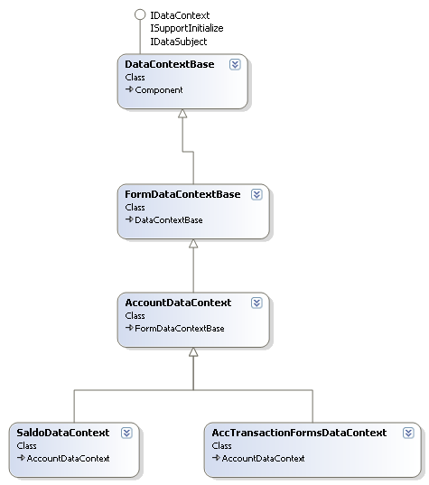

Создайте обычный проект C# WinForms.
Рисунок 1. Solution Explorer после создания нового проекта.
После создания нового проекта в Visual Studio следует указать ссылки (References) на все необходимые библиотеки (рис. 2).
Рисунок 2. Solution Explorer после создания нового проекта.
Примечание:
- Библиотека SymMathLib указывается только в случае создания документа с расчетом сумм и увязок, ее не нужно указывать если создается справочник.
- Библиотека DevExpress.XtraGrid.v8.2 указывается только в случае создания подформы с гридом, класс RoduzGridBaseDocumentSubForm.
- Библиотека DevExpress.XtraTreeList.v8.2 указывается только в случае создания подформы с деревом, класс RoduzTreeListBaseDocumentSubForm.
Архитектура документов в системе подразумевает разделение на слои ответственности, в нашем случае их 3.
Слой данных представлен компонентом, который наследуется от одного из классов контекстов (рис. 3).

Рисунок 3. Диаграмма контекстов данных.
| Класс контекста | Описание |
|---|---|
| DataContextBase | Базовый класс для всех контекстов, реализует основной набор операций с данными. Используется как базовый для тех форм в которых нет необходимости в расчете сумм или для справочников. |
| FormDataContextBase | Базовый класс для контекстов документов в которых нет обработки проводок. Дополняет DataContextBase реализуя операции расчета сумм и увязок, генерацию последовательностей. |
| AccountDataContext | Базовый класс для контекстов документов в которых есть необходимости работать с таблицами счетов. Дополняет FormDataContextBase предоставляя стандартно таблицы счетов 2-го, 4-го и 6-го порядка. |
| SaldoDataContext | Базовый класс для контекстов документов которые обрабатывают сальдо. Реализует методы расчета и сохранения сальдо. |
| AccTransactionFormsDataContext | Базовый класс для контекстов документов которые которые включают вкладку с сохранением проводок. Реализует методы построения шаблона проводок, наложение сумм из архива формы на шаблон проводок и сохранение проводок в архив проводок. |
На данном этапа необходимо определить какой именно из класов контекстов необходимо использовать, это зависит от функциональных потребностей создаваемой формы. Так допустим что создаваемая форма реализует подсчет контрольных сумм/увязок и сохранение данных в проводоки, то необходимо выбрать AccTransactionFormsDataContext, так как выбор другого класа вынудить нас писать реализацию функций сохранения в проводки самим. С другой стороны допустим что документ реализует расчет сумм но не имеет вкладки проводок то выбор класса AccTransactionFormsDataContext поместит лишнюю функциональность в код которая никогда не будет использоватся, для такого случая правельным выбором будет FormDataContextBase.
После выбора класса можно перейти к созданию компонента который собственно и будет представлять слой данных. (рис. 4- рис. 6)
Рисунок 4. Добавление компонента в проект
Рисунок 5. Указание имени комонент. (необезательно DataContext!)
Рисунок 6. Результат добавления компонента.
Добавленный компонент все еще не является контекстом так как наследуется от класса Component. Что бы зделать его контекстом необходимо унаследовать его от одно из классов контекста в нашем случае это будет AccTransactionFormsDataContext.
public partial class DataContext : DataManipulation.AccTransactionFormsDataContext
Все тепрь наш компонент полноценный контекст данных.
Подформа представляет собой функциональную единицу документа совокупность которых и формирует непосредсвенно документ. Подформы располагаются на вкладка документа и предоставляют пользователю интерфейс для обработки данных.
Иерархия классов подформ изображена на рис. 7.
Рисунок 7. Классы подформ..
| Класс подформы | Описание |
|---|---|
| BaseRoduzSubForm | Базовый класс для всех подформ, реализует основной набор свойств и операций. Почти никогда не используется как базовый для конечных подформ. |
| RoduzBaseDocumentSubForm | Дополняет BaseRoduzSubForm , реализуя операции Експорта. Почти никогда не используется как базовый для конечных подформ. |
| RoduzGridBaseDocumentSubForm | Используется как базовый класс для всех подформ в которых основным елементом управления есть грид. |
| RoduzTreeListBaseDocumentSubForm | Используется как базовый класс для всех подформ в которых основным елементом управления есть дерево. |
| RoduzAccTransactionSubForm | Используется как базовый класс для подформы проводок. |
Таким образом, если необходимо создать подформу с елементом управления типа Grid то используем RoduzGridBaseDocumentSubForm. Если необходимо создать подформу которая не содержит ни Grid ни TreeList то используем либо RoduzBaseDocumentSubForm либоBaseRoduzSubForm в зависимости от необходимости експорта.
После того, как определили какой класс будет необходим для подформы, нужно добавить соответствующий компонент (рис. 8-10).
Рисунок 8. Добавление пользовательского елемента управления в проект.
Рисунок 9. Указываем имя елемента.
Рисунок 10. Результат добавления елемента.
Так же как и в случае с контекстами данных, созданый елемент управления не является подформой, чтобы он ею стал, его нужно унаследовать от одного из классов подформ.
public partial class MainDocumentUI : RoduzForms.RoduzGridBaseDocumentSubForm
Результат видно на рис.11.
Рисунок 11. Дизайнер компонента после установки базового класса.
По такой же схеме создаются все (по количеству вкладок) подформы документа.
Каждая подформа в документе может наследовать различные классы независимо от других подформ. Тоесть можна создать одновременно две вкладки документа одна с елементом TreeList а одна с елементом Grid.
Примечание: В данном примере я создам две подформы, одна с Grid (MainDocumentUI) и одна с TreeList (MainDocumentUI2)
Форма представляет собой контейнер который содержит все подформы документа и контекст данных. Форма наследуется от одного из класов форм (рис. 12)
Рисунок 12. Классы форм.
| Класс формы | Описание |
|---|---|
| BaseRoduzForm | Базовый класс для всех форм содержит базовую логику управления подформами. Никогда не используется как базовый класс для конечных документов. |
| BaseDocumentRoduzForm | Дополняет BaseRoduzForm добавляя основные елементы пользовательского интерфейса для документов (кнопки сохранения, изменения режима, импорта/експорт, подписи, и т.д.). Никогда не используется как базовая для конечных документов. |
| RoduzStandartDocumentForm | Дополняет BaseDocumentRoduzForm добавляя панель вкладок для подформ и методы управления ею. Используется как базовая форма для форм без вкладки проводок. |
| RoduzStandartAccTransactionDocumentForm | Дополняет RoduzStandartDocumentForm добавляя вкладку проводок и методы управления ею. Используется как базовая форма для форм с вкладкой "Формирование проводок". |
| BaseNSIRoduzForm | Дополняет BaseRoduzForm добавляя основные елементы пользовательского интерфейса для справочников (кнопки сохранения, изменения режима, импорта/експорт, и т.д.). Используется как базовая форма для всех справочников системы. |
Определить какой класс формы нужно использовать для вашего приложения довольно просто. Если нужно создать документ который не реализует вкладку "Формирование проводок" то наследуем от RoduzStandartDocumentForm, если нужна такая вкладка, то берем RoduzStandartAccTransactionDocumentForm. В случае справочника единственный вариант BaseNSIRoduzForm.
Класс формы уже есть он был создан при создании стандартного проекта. все что осталось это унаследовать его выбраного класса формы.
Для стандартной формы без вкладки проводок:
public partial class Form1 : RoduzForms.RoduzStandartDocumentForm
Для стандартной формы с вкладкой проводок:
public partial class Form1 : RoduzForms.RoduzStandartAccTransactionDocumentForm
Для стандартной формы справочника:
public partial class Form1 : RoduzForms.RoduzForms.NDI.BaseNSIRoduzForm
Примечание: Во избежание проблем с именами рекомендуется перенести классы контекста данных и подформы в отдельное пространство имен.
Теперь когда все компоненты созданы нужно их связать. Связывание компонентов выполняется в классе формы которая является основным элементом проекта, в ней так же будут выставлятся все настройки.
Все пользовательские компоненты становятся доступными во вкладке ToolBox (рис. 13) после успешной компиляции проекта (Ctrl+Shift+B).
Рисунок 13. Созданные компоненты
Теперь необходимо поместить все эти компоненты на форму (рис. 14).
Контекст данных является невизуальным компонентом, поетому его можно тащить с ToolBox на любой участок формы, а вот подформы должны быть размещены каждая на своей вкладке.
По умолчанию при наследовании от любого из классов RoduzStandartDocumentForm или RoduzStandartAccTransactionDocumentForm создается стандартная вкладка для подформы, если необходимо использовать больше одной подформы то следует создать необходимое количество вкладок.
Примечание: Первым всегда следует помещать контекст данных (DataContext) так как он устанавливается и для формы и для подформ.
Рисунок 14. Вид документа после помещение компонентов.
Если вы пробывали запускать создаваемый проект на предыдущих этапах то наверное заметили что он не совсем похож на документ который нам нужен, к тому же он еще и выкидывает ошибку при переходе на вкладу проводок или например при попытке нажать на какую нибуть кнопку =(.
Так происходит по той простой причине что компоненты нужно настроить правильно.
Первым делом необходимо проверить/установить свойство "Управления данными" в каждой из подформ и также в основной форме. (рис. 15)
Рисунок 15. Установленные свойства данных
Вы могли заметить что данное свойство для формы было не установленно а для подформ уже установленно, так происходит если подформы добавляются после добавления контекста данных.
Теперь можно приступить к настройке контекста данных и написанию собственного кода.